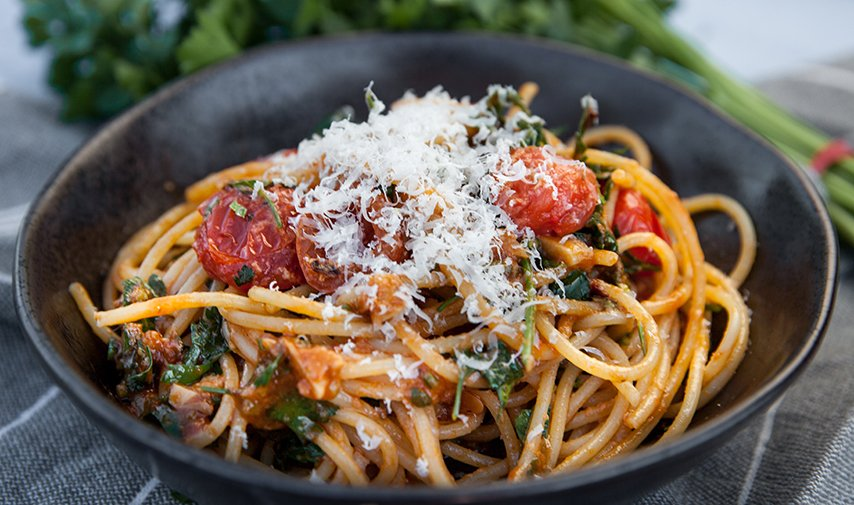

Spaghetti Recipe

Description
Delicious spaghetti is a classic pasta dish that's easy to make and always satisfying. It consists of tender, al dente spaghetti noodles that are tossed in a rich and flavorful sauce. The sauce can be a simple tomato sauce, a creamy Alfredo sauce, or a hearty meat sauce, depending on your preference. The spaghetti is then topped with grated Parmesan cheese and freshly chopped basil, adding a final touch of richness and freshness. Whether you're serving it as a quick weeknight dinner or a comforting family meal, delicious spaghetti is a crowd-pleaser that's sure to be a hit.
Ingredients:
For the pasta:
- 1 pound spaghetti noodles
- Salt
- Olive oil
For the Tomatoe Sauce:
- 1 large onion, chopped
- 3 cloves of garlic, minced
- 1 can (28 ounces) of crushed tomatoes
- 2 tablespoons olive oil
- Salt and black pepper, to taste
- Optional: red pepper flakes for a little heat
For the alfredo Sauce (Optional):
- 1 cup heavy cream
- 1/2 cup grated Parmesan cheese
- 2 cloves of garlic, minced
- Salt and black pepper, to taste
For serving:
- Grated Parmesan cheese
- Fresh basil, chopped
Notes for Ingredients:
These ingredients are for a basic spaghetti recipe and can be adjusted to your liking. Feel free to add more herbs, spices, or seasonings to suit your taste. Additionally, you can use fresh tomatoes instead of canned ones for a more vibrant flavor.
Steps for Tomatoe Sauce:
- Cook the spaghetti: Bring a large pot of salted water to a boil. Add 1 pound of spaghetti noodles and cook them until they are al dente, following the package instructions. Drain the spaghetti, reserving 1 cup of the pasta water.
- Make the tomato sauce: In a separate pan, heat 2 tablespoons of olive oil over medium heat. Add 1 chopped onion and 3 minced garlic cloves and sauté until the onion is translucent and fragrant, about 5 minutes. Stir in a can of crushed tomatoes, salt, and black pepper to taste. If desired, add a pinch of red pepper flakes for a little heat. Let the sauce simmer for about 10 minutes, or until it has thickened slightly.
- Toss the spaghetti with the sauce: In a large serving bowl, combine the cooked spaghetti and the tomato sauce. Toss them together until the spaghetti is evenly coated with the sauce. If the sauce is too thick, you can add some of the reserved pasta water to thin it out.
- Serve and enjoy: Top the spaghetti with grated Parmesan cheese and freshly chopped basil. Serve hot and enjoy your delicious spaghetti.
Notes for Steps:
For a meat sauce, simply brown 1 pound of ground beef or Italian sausage in the same pan as the onion and garlic. Drain the excess fat and proceed with step 2, using the meat in place of the onion and garlic. For an Alfredo sauce, heat 1 cup of heavy cream and 2 minced garlic cloves in a saucepan over low heat until the cream begins to simmer. Remove the pan from the heat and stir in 1/2 cup of grated Parmesan cheese and salt and black pepper to taste. Toss the cooked spaghetti with the Alfredo sauce in the same manner as the tomato sauce.
Steps for Alfredo Sauce (Optional)
- Heat the cream: In a saucepan over low heat, warm 1 cup of heavy cream and 2 minced garlic cloves until the cream begins to simmer.
- Add the cheese: Remove the saucepan from the heat and stir in 1/2 cup of grated Parmesan cheese. Season the sauce with salt and black pepper to taste.
- Thicken the sauce: Return the saucepan to low heat and cook, stirring constantly, until the cheese has melted and the sauce has thickened slightly, about 5 minutes.
- Serve and enjoy: Toss the cooked spaghetti noodles with the Alfredo sauce until the spaghetti is evenly coated with the sauce. Serve hot and enjoy your delicious spaghetti!
Notes for Alfredo sauce Steps:
For a richer and creamier sauce, you can add more cheese or cream as desired. You can also add a pinch of nutmeg for added flavor. Additionally, you can adjust the consistency of the sauce by adding more or less heavy cream. Just be sure to cook the sauce over low heat to avoid curdling the cream.